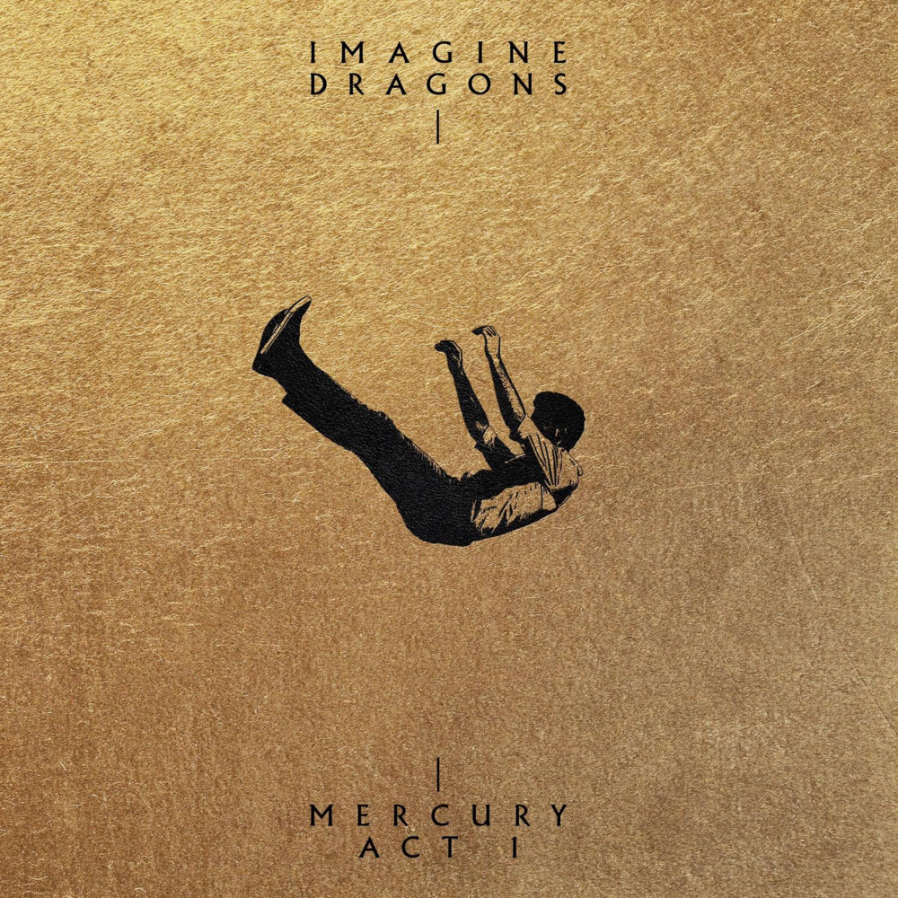
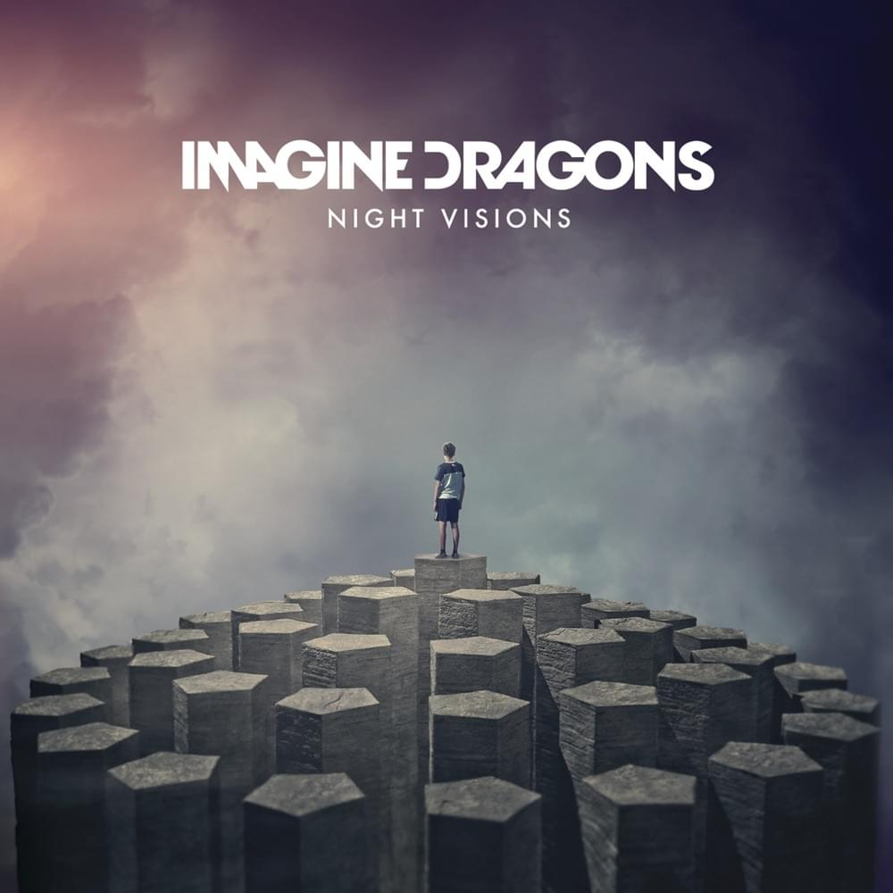

Enemy
October 28, 2021 by Imagine Dragons
Everybody wants to be my enemy. Look out for yourself, my enemy (yeah), look out for yourself Uh, look, okay, I'm hoping that somebody pray for me. I'm praying that somebody hope for me I'm staying where nobody 'posed to be, Posted, being a wreck of emotions. Ready to go whenever, just let me know, The road is long, so put the pedal into the floor The enemy on my trail, my energy unavailable. I'ma tell 'em, "Hasta luego" They wanna plot on my trot to the top. I've been outta shape, thinkin' out the box I'm an astronaut, I blasted off the planet rock. To cause catastrophe and it matters more because I had it and I had a thought about wreaking havoc on an opposition, kinda shockin'. They want a static with, precision, I'm automatic quarterback. I ain't talking sacking pack it, pack it up, I don't panic, batter-batter up Who the baddest? It don't matter 'cause we at ya throat.
Radioactive
October 29, 2013 by Imagine Dragons
I'm waking up, I feel it in my bones Enough to make my systems blow Welcome to the new age, to the new age Welcome to the new age, to the new age Whoa, oh, oh, oh, oh, whoa, oh, oh, oh, I'm radioactive, radioactive Whoa, oh, oh, oh, oh, whoa, oh, oh, oh, I'm radioactive, radioactive All systems go, the sun hasn't died Deep in my bones, straight from inside I'm waking up, I feel it in my bones Enough to make my systems blow Welcome to the new age, to the new age Welcome to the new age, to the new age Whoa, oh, oh, oh, oh, whoa, oh, oh, oh, I'm radioactive, radioactive Whoa, oh, oh, oh, oh, whoa, oh, oh, oh, I'm radioactive, radioactive